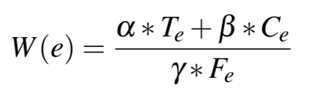

Weighted UI Exploration
To activate the actions that can enable future transitions, GoalExplorer adopts a weighted UI exploration strategy, which was shown to efficiently discover new states of a screen in previous work. The exploration strategy assigns each action e an execution weight W(e), which is defined as:

where Te is the event’s type, e.g., click, scroll; Fe is the event’s history execution frequencies that measure how many times an event has been executed during this exploration session. To avoid division by zero, Fe is initially set as 1 and it increments each time the event has been executed. Ce is the number of unvisited children widgets indicating how many of the widgets with Fe = 1 are in the screen after the event e has been executed.
α, β, γ are the weight parameters that Stoat carefully tuned based on their observation, hence we adopt the same value in Action Picker, and set α, β, and γ to 0.4, 0.2, and 0.4 respectively.